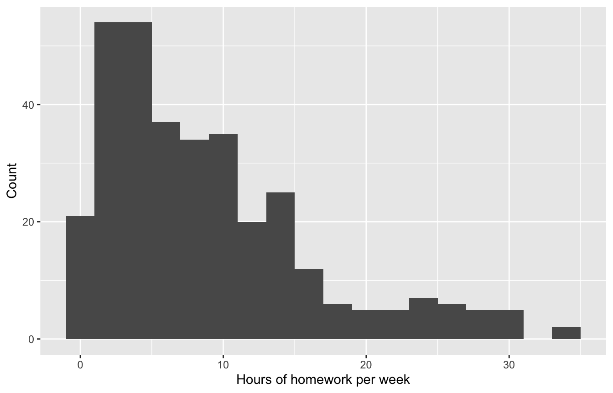
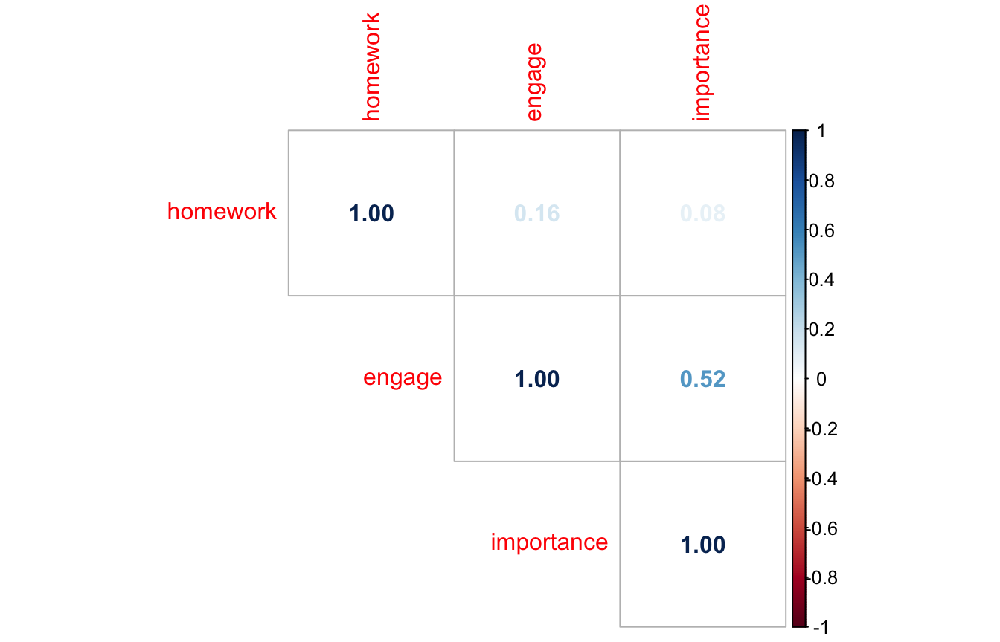
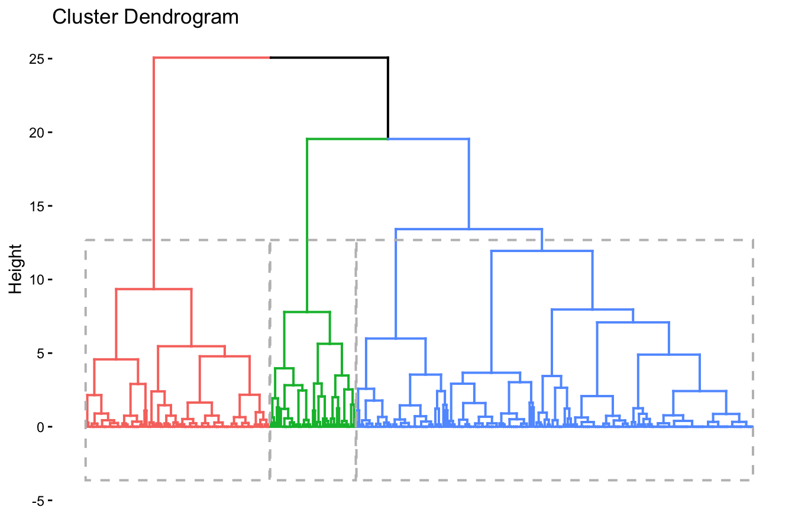
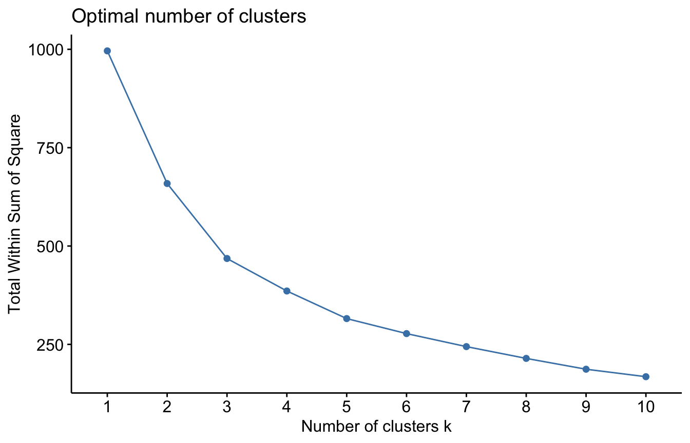
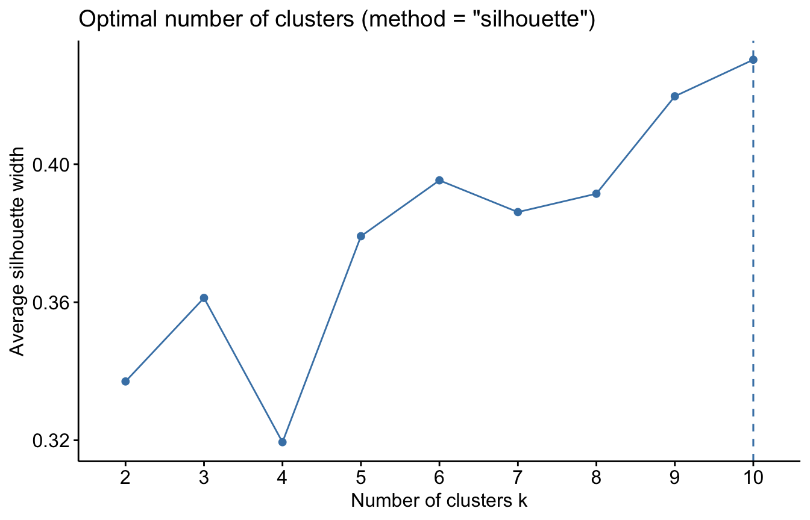
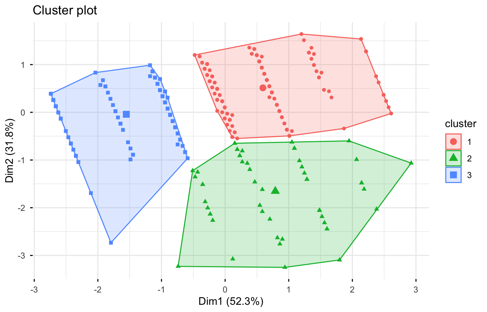
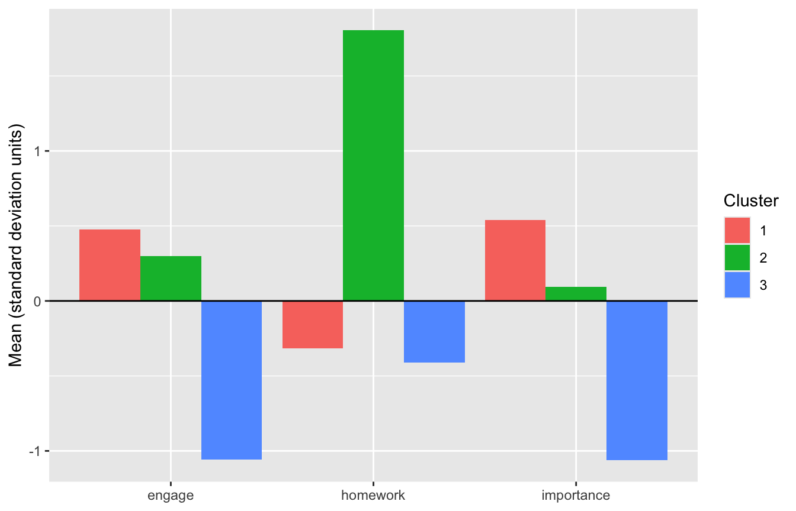

library(tidyverse)
library(haven)
library(psych)
library(corrplot)
library(factoextra)8 Cluster Analysis
Most of the models in this book are variable-centered: they describe how variables relate to one another across a whole sample. Cluster analysis is person-centered. It sorts cases into groups (clusters) whose members have similar profiles across a set of variables. There is no outcome variable; the goal is to find groups that may already exist in the data.
In this chapter, we cluster students on three academic engagement measures. We use two common approaches, hierarchical clustering and k-means, and then describe the clusters we find.
8.1 The data
We use a random sample of 500 students from ELS:2002 (the same study used in Chapter 6). We cluster students on three variables:
byhmwrk: hours per week spent on homeworkbys87a: “Gets totally absorbed in mathematics”bys87f: “Mathematics is important”
The last two are rated from 1 (strongly agree) to 4 (strongly disagree). We also keep the SES composite (byses1) to describe the clusters later.
els_cluster <- read_dta("data/ELS_Cluster_500.dta")8.1.1 Data cleaning
We take three steps to prepare the data:
- Recode ELS’s negative missing data codes to
NA. - Remove homework values of 97 to 99. These are not hours. They are codes for responses that were top-coded (capped at a maximum) in the survey, so we treat them as missing.
- Reverse-code the two math items (5 minus the score), so that higher values mean more engagement and more importance.
els_cluster_clean <- els_cluster |>
zap_labels() |>
transmute(
homework = if_else(byhmwrk %in% 0:96, byhmwrk, NA),
engage = if_else(bys87a %in% 1:4, 5 - bys87a, NA),
importance = if_else(bys87f %in% 1:4, 5 - bys87f, NA),
ses = if_else(byses1 < -5, NA, byses1)
) |>
drop_na(homework, engage, importance)
describe(els_cluster_clean)ggplot(els_cluster_clean, aes(x = homework)) +
geom_histogram(binwidth = 2) +
labs(x = "Hours of homework per week", y = "Count")
8.1.2 Standardizing
Cluster analysis groups cases by their distance from one another. If variables are on different scales, those with larger ranges dominate the distances. Homework hours range from 0 to about 35, while the math items range from 1 to 4. Thus, we standardize all three (mean of 0, standard deviation of 1) with scale():
cluster_vars <- els_cluster_clean |>
select(homework, engage, importance) |>
scale() |>
as_tibble()
describe(cluster_vars, fast = TRUE)8.1.3 Correlations
cor(cluster_vars) |>
corrplot(method = "number", type = "upper")
Engagement and importance are moderately correlated, and homework is only weakly related to either one.
8.2 Hierarchical clustering
Hierarchical clustering starts with every student in their own cluster. At each step, it merges the two closest clusters, until all students are in one cluster. We compute Euclidean distances between students with dist() and merge clusters with Ward’s method (ward.D2), which at each step chooses the merge that adds the least within-cluster variance.
hc <- hclust(dist(cluster_vars, method = "euclidean"), method = "ward.D2")A dendrogram shows the full sequence of merges. The height of each join reflects how different the merged clusters are. Long vertical lines suggest distinct groups.
fviz_dend(hc, k = 3, show_labels = FALSE, rect = TRUE)
The dendrogram suggests three fairly distinct groups. We save each student’s cluster with cutree():
hc_clusters <- cutree(hc, k = 3)
table(hc_clusters)hc_clusters
1 2 3
198 43 92 8.3 K-means clustering
K-means takes the opposite approach. We choose the number of clusters (k) in advance. The algorithm then assigns each student to the nearest cluster center and moves each center to the mean of its members, repeating until the assignments stop changing.
8.3.1 Choosing the number of clusters
There is no single correct way to choose k. Two common aids are the elbow plot and the silhouette width.
The elbow plot shows the total within-cluster sum of squares for each k. This always decreases as k grows, so we look for the “elbow” where adding clusters stops helping much.
set.seed(663)
fviz_nbclust(cluster_vars, kmeans, method = "wss", nstart = 25)
The silhouette width measures how well each student fits their own cluster compared to the next-closest one. Higher averages are better.
set.seed(663)
fviz_nbclust(cluster_vars, kmeans, method = "silhouette", nstart = 25)
The two aids do not fully agree. The elbow is near three clusters, while the average silhouette width keeps rising slowly with more clusters. In practice, the choice also depends on whether the clusters are interpretable and useful. We proceed with three, which also matches the hierarchical solution.
8.3.2 Fitting the model
K-means starts from random cluster centers, so results can vary from run to run. Setting a seed makes them reproducible, and nstart = 25 tries 25 random starts and keeps the best solution.
set.seed(663)
km <- kmeans(cluster_vars, centers = 3, nstart = 25)
km$size[1] 182 54 97km$centers homework engage importance
1 -0.3169229 0.4747202 0.53835484
2 1.8054166 0.3000880 0.09341652
3 -0.4104384 -1.0577714 -1.06211415The centers are in standard deviation units. fviz_cluster() plots the students and their clusters. With more than two variables, it plots the first two principal components, which summarize most of the variation in the three variables.
fviz_cluster(km, data = cluster_vars, geom = "point",
ellipse.type = "convex", ggtheme = theme_minimal())
8.3.3 Comparing the two approaches
A cross-tabulation shows how closely the two methods agree. (Cluster numbers are arbitrary, so look for one large count in each row rather than counts on the diagonal.)
table(hierarchical = hc_clusters, kmeans = km$cluster) kmeans
hierarchical 1 2 3
1 181 10 7
2 1 42 0
3 0 2 90The two methods place nearly all students in the same groups, which suggests the three-cluster solution is fairly stable.
8.4 Describing the clusters
The final step is to describe each cluster in the original units of the variables. We also compare the clusters on SES, which was not used to form them.
els_cluster_clean |>
mutate(cluster = factor(km$cluster)) |>
group_by(cluster) |>
summarize(
n = n(),
across(c(homework, engage, importance, ses),
~ round(mean(.x, na.rm = TRUE), 2))
)A plot of the standardized centers shows each cluster’s profile:
as_tibble(km$centers) |>
mutate(cluster = factor(row_number())) |>
pivot_longer(-cluster, names_to = "variable", values_to = "mean") |>
ggplot(aes(x = variable, y = mean, fill = cluster)) +
geom_col(position = "dodge") +
geom_hline(yintercept = 0) +
labs(x = NULL, y = "Mean (standard deviation units)", fill = "Cluster")
The three clusters can be described roughly as:
- Engaged: above average on math engagement and importance, with typical homework time.
- High homework: far above average on homework time, with average views of math.
- Less engaged in math: well below average on math engagement and importance.
These labels are our interpretation. Naming clusters is a judgment call, and labels should describe the profile without overstating what it means. The SES means differ somewhat across clusters, though a formal test (for example, an ANOVA) would be needed before drawing conclusions.